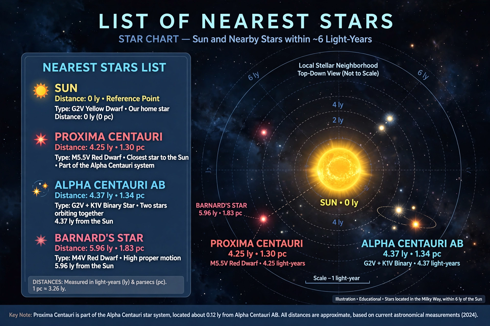

This list of nearest stars ranks star systems by distance from the Solar System, as measured by parallax, out to about 20 light-years.
| System | Distance (ly) | Notes |
|---|---|---|
| Proxima Centauri | 4.24 | Red dwarf, exoplanets; part of Alpha Centauri |
| Alpha Centauri A & B | 4.37 | Sun-like binary |
| Barnard's Star | 5.96 | High proper motion red dwarf |
| Wolf 359 | 7.86 | Flare star |
| Lalande 21185 | 8.31 | Red dwarf |
| Sirius | 8.60 | Brightest star in night sky, with white dwarf companion |
| Luyten 726-8 | 8.73 | Binary red dwarfs |
| Ross 154 | 9.70 | Red dwarf |
| Ross 248 | 10.32 | Red dwarf |
| Epsilon Eridani | 10.47 | Young Sun-like star with debris disk |
Most nearby stars are dim red dwarfs invisible to the naked eye; only a few, like Sirius, Alpha Centauri and Procyon, are bright. Brown dwarfs such as those in the Luhman 16 system (6.5 ly) are sometimes listed separately. Distances are refined by Gaia astrometry. See Proxima Centauri, Sirius, Stellar parallax.